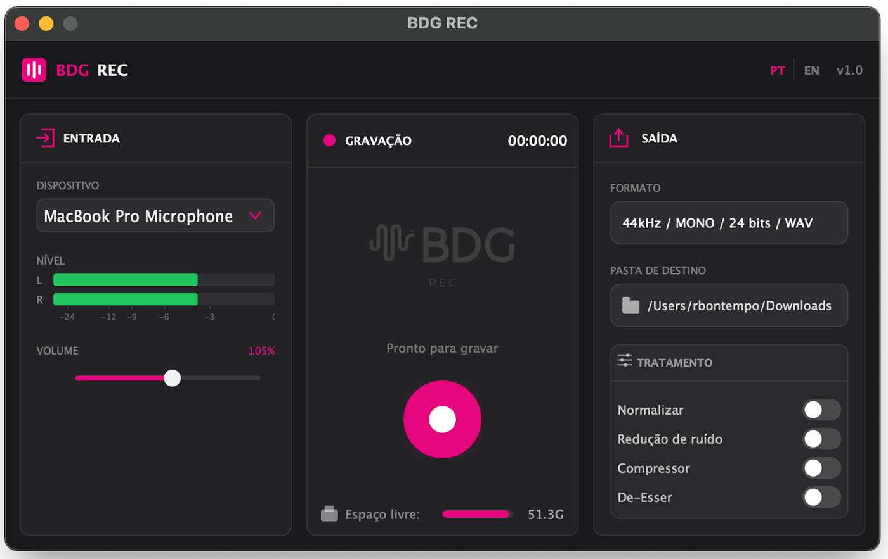

Grave seu podcast sem configurações, sem complicação. Um botão. Áudio profissional. Grátis para macOS e Windows.

Projetado para quem quer gravar, não configurar.
Escolha o dispositivo de entrada. O app salva sua escolha para a próxima vez.
Um botão enorme no centro da tela. Impossível errar.
Seu áudio é salvo automaticamente. Com tratamento profissional, se quiser.
Gravação mono em qualidade profissional. Taxa de amostragem nativa do seu dispositivo.
Rotação de chunks a cada 5 minutos. Se o computador travar, você não perde a gravação.
RMS automático com limiter brick-wall. Volume consistente sem distorção.
Rede neural RNNoise remove ruído de fundo automaticamente. Sem plugins, sem ajustes.
3 bandas com ganho automático. Sua voz soa equilibrada e profissional.
Redução de sibilância na faixa de 4-8 kHz. Adeus sons de "s" estridentes.
Download gratuito. Sem cadastro. Sem assinatura.